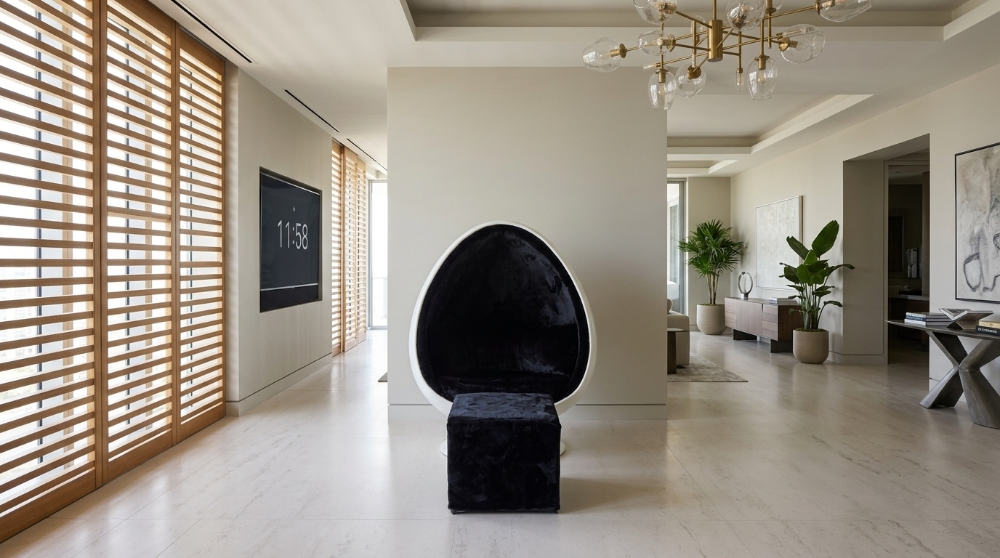

Consultation
Choose the model, intended use and technical requirements with personalized sales guidance.

Craftsmanship
Every chair is built to order in Chatsworth and personalized from shell to upholstery.
Fewer than 500 per year
SoloDome is produced in limited volume, allowing each chair to be guided through finish, upholstery and optional artwork with a level of attention conventional production cannot offer.
Choose the model, intended use and technical requirements with personalized sales guidance.
Select exterior color, interior upholstery and optional custom art around your space.
Your chair is assembled and its audio architecture prepared in Chatsworth, California.
Receive a fully assembled SoloDome, ready to plug in and experience.
Exterior
The high-gloss form gives SoloDome its architectural identity. Choose a restrained neutral, a deep automotive tone or a color created to become the room’s defining object.

Interior
Upholstery can move from quiet and tailored to expressive and tactile. Replacement interior panels can also be installed later without moving the chair.

The workshop
SoloDome Inc.
9731 Variel Avenue
By appointment only
Handcrafted in Southern California since 2019 and shipped to clients around the world.
Created around you
Select your model, finish, upholstery and professional audio options. Every SoloDome is handcrafted to order in California.
Configure your SoloDome ↗